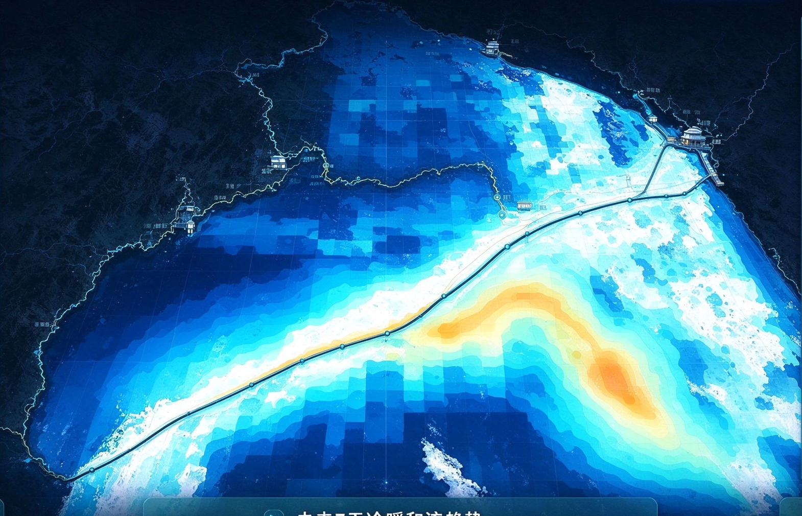

{{hoverGrid.lon}}°E / {{hoverGrid.lat}}°N
单击固定，查看详细预测基于《辽东湾海冰预测预警系统项目说明书》与提供的 Web 大屏参考图构建。
当前覆盖概率、厚度、风场、订阅人数与回测指标均为本地示意数据，不代表真实观测或模型推理结果。地图视觉底图来自用户提供的参考图，为示意呈现，不能用于导航。已实现的交互均在浏览器本地运行，未连接实际预报接口或邮件服务。
{{dateLabel(day)}} · 当前港口风险清单
{{portAdvice(p.values[day])}}
随预报时效增加，模拟精度逐步衰减
| 模型 | 准确率 | F1 | RMSE |
|---|---|---|---|
| {{m.name}} | {{(m.accuracy-backtestLead*.7).toFixed(1)}}% | {{(m.f1-backtestLead*.006).toFixed(2)}} | {{(m.rmse+backtestLead*.003).toFixed(3)}} |